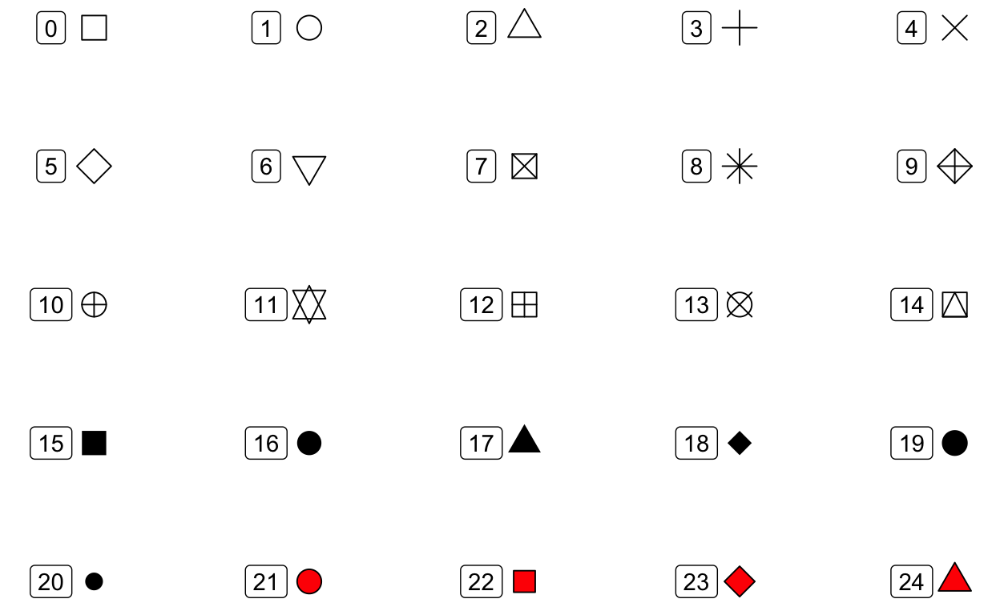
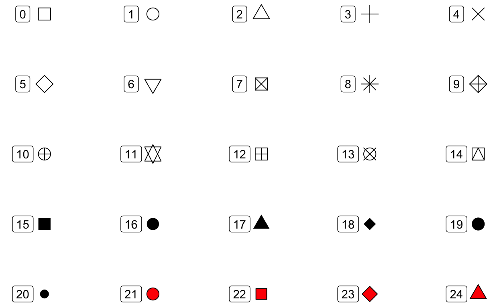
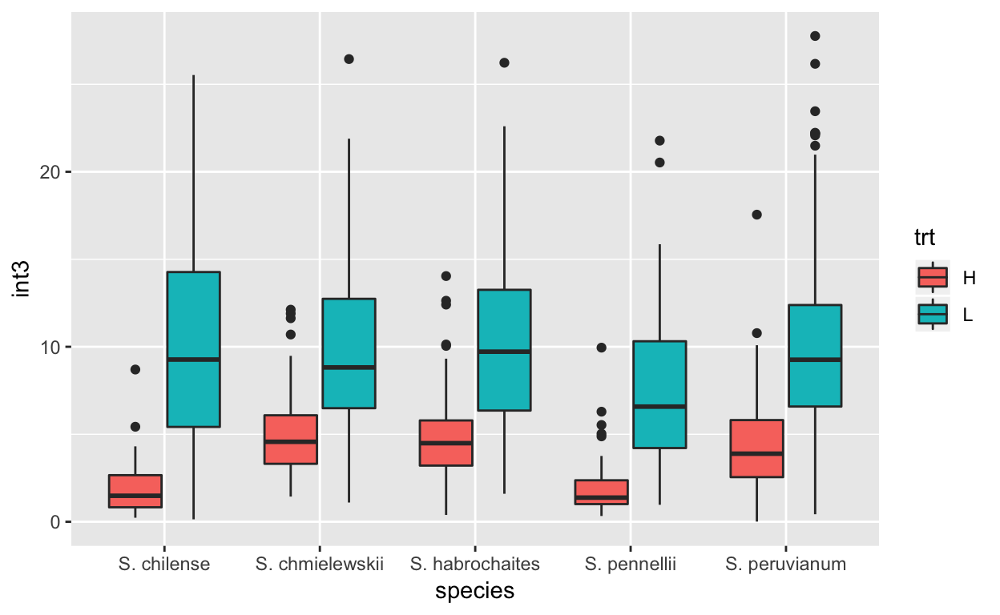
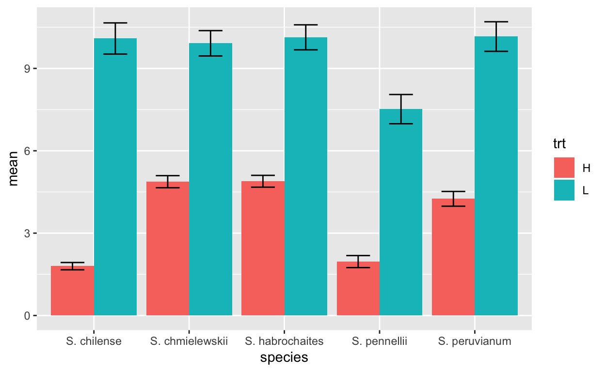
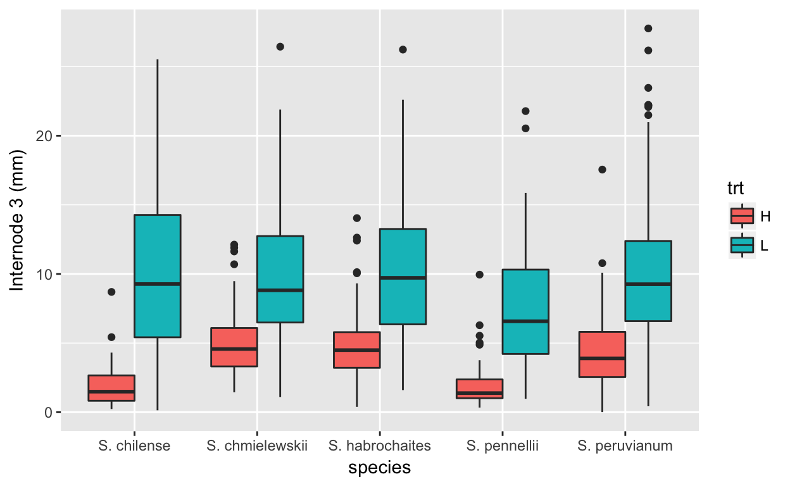

ggplot
ggplot intro
The ggplot2 package is a package that allows you to rapidly make impressive plots from complex data sets.
In addition to this tutorial there are several excellent resources available on the web:
- The visualization chapter of R for Data Science
- The Graphs section of Cookbook for R (highly recommended! Especially good when you have a “how do I…” type of question)
- The official ggplot documentation
library(tidyverse)(You can also just use library(ggplot2) if you don’t want/need the other tidyverse packages)
A first plot
We again work with the Tomato data set. It has been preloaded for this tutorial. To remind you, it has the following columns:
- shelf, flat, col, row: information about where each plant was grown
- acs: the accession number for that strain
- trt: “H” is light with a high red:far-red ratio; simulated sun. “L” is light with a low red:far- red ratio; simulated plant shade.
- days: days since germination
- date: date of measurement
- hyp: hypocotyl length (embryonic stem)
- int1-int4: individual internode lengths. Internodes are stem segments
- leafnum: which leaf was measured
- petleng: petiole length
- leafleng: leaf length
- leafwid: leaf width
- ndvi: a measure of plant vegetation density
- lat: latitude of origin
- long: longitude of origin
- alt: altitude of origin
- species: species of plant
- who: who measured the plants
tomatoH that only contains measurements from the “H” treatment.
head(tomatoH)Let us begun by asking if there is a relationship between the length of the petiole (leaf stem) and the leaf of the leaf blade:
ggplot(data=tomato,
mapping = aes(x=petleng,y=leafleng)) +
geom_point()Yes, it looks like there is.
Let’s look at each line of the code above:
ggplot(data=tomato,ggplot is the main function and initiates the plot. The data argument tells ggplot what data set to work on.mapping = aes(x=petleng,y=leafleng) +Here we are telling ggplot which columns in our data set should be mapped to particular plot __aes__thetics. The argument is calledmappingand the input to mapping is theaes()function. We useaes()to tell ggplot that petiole length should be mapped to the x axis and leaf length should be mapped to the y axis.- notice that the line that beings with
mappingends with a+. This tells R that we want to add to the plot created by the ggplot function. geom_point(). Geoms (geometries) indicate what what type of plot we want to make.
We will look at these functions in more detail as the tutorial continues…
Note that since we loaded tidyverse we could also pipe our data into ggplot:
tomato %>% ggplot(mapping = aes(x=petleng,y=leafleng)) +
geom_point()Aesthetics
In this section we will explore aesthetics. As noted above, aesthetics control the relationship between your data and plot elements.
color
One common aesthetic is the color aesthetic. Change the code below so that color is mapped to the treatment (trt) column:
tomato %>% ggplot(mapping = aes(x=petleng,y=leafleng)) +
geom_point()shape
The shape aesthetic controls the shape of the plotted points.
25 shapes are available:

Note: color of the fill for shapes 21-24 can be controlled with the fill aesthetics. the color of the rest of the shapes, as well as the border of shapes 21-24 is controlled with the color aesthetic
Create a plot of int3 vs int4 where color indicates trt, and shape indicates who measured the plant.
size
The size aesthetic controls the size of the plotted points.
To practice, create a plot of latitude vs longitude where altitude is indicated by the size of the point and species is indicated by color
setting plot characteristics without mapping
What if you want to change a plot characteristic but not have it mapped to a data column? You can do this by setting the characteristic in the geom call, but outside of the aes function:
tomato %>% ggplot(mapping = aes(x=petleng,y=leafleng)) +
geom_point(color="skyblue")tomato %>% ggplot(mapping = aes(x=petleng,y=leafleng)) +
geom_point(color="skyblue")more aesthetics
There are many more aesthetics available, depending on the geom used. Some of these will be introduced as you learn about additional geoms.
Geoms
Geoms control the type of plot that is made. You have already seen one geom, geom_point.
geom_smooth()
geom_smooth allows you to add trend lines to your plots, for example:
tomato %>% ggplot(aes(x=lon, y = lat)) +
geom_smooth()But wait, what if you also want the original data points? We can add multiple geoms to a plot:
tomato %>% ggplot(aes(x=lon, y = lat)) +
geom_smooth() +
geom_point()By default geom_smooth fits a smoothed line to the data. But you can also show a best-fit, straight linear regression. To do this we tell geom_smooth to use the “lm” (linear model) function:
tomato %>% ggplot(aes(x=lon, y = lat)) +
geom_smooth(method="lm") +
geom_point()Try including a trend-line to the plot of int3 vs int4. Does the order of geom_smooth and geom_point matter in the final output of the plot?
geom_histogram() and geom_density()
geom_histogram() creates histograms. For histograms, values for the y-axis are calculated for you, so we just provide a x aesthetic:
tomato %>% ggplot(aes(x=hyp)) +
geom_histogram()Histograms (and many other plots) can use the fill aesthetic to control the color used to fill the bars (or other shapes).
tomato %>% ggplot(aes(x=hyp)) +
geom_histogram(fill="red")geom_density(). Make a density plot below:
How would you describe the difference between a density plot and a histogram?
One nice thing about density plots is that we can compare the densities of different subsets of the data:
tomato %>% ggplot(aes(x=hyp, fill=trt)) +
geom_density(alpha=.5)What is alpha doing? Experiment with different values; the allowable range is 0 to 1.
tomato %>% ggplot(aes(x=hyp, fill=trt)) +
geom_density(alpha=.5)Alpha can be used in most geoms.
geom_boxplot() and geom_violin()
Boxplots and violin plots are provide quick summaries of different classes of data. Suppose we want to examine hypocotyl length of each species. We can map hypocotyl length to the y-axis and species to the x-axis.
tomato %>% ggplot(aes(x=species, y=hyp)) +
geom_boxplot()In a boxplot the horizontal line represents the median. Look at the help for geom_boxplot to determine what other components represent:
A related geom is geom_violin()
Remake the above plot using geom_violin.
- Do you like the box or violin plot better?
- What does the width of the “violin” represent?
- Which is more informative about the distribution of the data?
Test your skills
Make a boxplot showing hypocotyl length for the “H” and “L” treatmentsmore geom_boxplot()
If we add a color or fill aesthetic to a box or violin plot then we can start comparing multiple factors in our data.
Use the coding box below to re-create this plot:

What does this plot illustrate?
geom_col()
geom_col() allows you to make a classic bar chart, where the height of the bars corresponds to some value in the data. This works best for data summaries.
First let’s summarize our data:
sem <- function(x, na.rm=FALSE) {
sd(x,na.rm=na.rm)/sqrt(length(na.omit(x)))
}
int3.mean.sem <- tomato %>%
group_by(species, trt) %>%
summarize(mean=mean(int3, na.rm=TRUE), sem=sem(int3, na.rm=TRUE))
int3.mean.semint3.mean.sem %>% ggplot(aes(x=species, y = mean, fill=trt)) +
geom_col()by default geom_col stacks the columns…perhaps not what we want. We can change that with position
int3.mean.sem %>% ggplot(aes(x=species, y = mean, fill=trt)) +
geom_col(position="dodge")what if we want to add error bars? we use geom_errorbar and the ymin and max aesthetics
int3.mean.sem %>% ggplot(aes(x=species, y = mean, fill=trt, ymax=mean+sem, ymin=mean-sem)) +
geom_col(position="dodge") +
geom_errorbar(position = position_dodge(width=0.9), width=.5)Your turn…
Make a bar chart that shows average leaf length for each accession (acs) and trt combination.
geom_line
data appropriate for bar charts also can be plotted using lines:
int3.mean.sem %>% ggplot(aes(x=species,
y=mean,
color=trt,
group=trt,
shape=trt,
ymax=mean+sem,
ymin=mean-sem)) +
geom_line() +
geom_errorbar(width=.1) +
geom_point()It actually doesn’t make a lot of sense to plot this data that way. However, plotting each species’ reaction to the treatment would. Modify the above code to make this plot:

more geoms
There are several more geoms available. You can check the docs to see a listing.
Scales
ggplot does a nice job of automatically defining the scales, but what if you want something different? we add a call to a scale() function.
Consider this bar chart again:

What if we want the fill colors to be something else? We use scale_fill_manual()
int3.mean.sem %>% ggplot(aes(x=species, y = mean, fill=trt, ymax=mean+sem, ymin=mean-sem)) +
geom_col(position="dodge") +
geom_errorbar(position = position_dodge(width=0.9), width=.5) +
scale_fill_manual(values = c("H"="darkblue","L"="red"))Note: you can get a list of possible colors with colors()
Change the colors in the plot below so that Dan and Pepe are different from the defaults. You can choose colors of your liking:
tomato %>% ggplot(aes(x=species, y = hyp, fill=who)) +
geom_violin()Most aesthetics have similar scale commands that allow you to adjust how they are used. See scales
A particular useful one is scale_y_log10() that transforms the y-axis scale (there is an equivalent scale_x_log10()
Facets
You have seen that one way to split your data by categories is to map a categorical variable to an aesthetic. e.g. the code below separates the data into “H” and “L” treatments before making the density plot.
tomato %>% ggplot(aes(x=int3, fill=trt)) +
geom_density(alpha=.5)A second way to do this is to facet your data using facet_wrap() or facet_grid().
facet_wrap() uses a single variable for faceting and you can specify the number of rows or columns used in the layout.
tomato %>% ggplot(aes(x=int3)) +
geom_density(fill="lightblue") +
facet_wrap(~ trt)Modify the code below so that the facets are arranged in columns instead of rows (hint, look at the help page for facet_wrap)
tomato %>% ggplot(aes(x=hyp)) +
geom_density(fill="papayawhip") +
facet_wrap(~ trt)facet_grid() can use two variables to facet and uses those variable to specify the grid of rows and columns:
tomato %>% ggplot(aes(x=int3)) +
geom_histogram(fill="lawngreen") +
facet_grid(who ~ trt)Practice by recreating the plot shown below:
## `stat_bin()` using `bins = 30`. Pick better value with `binwidth`.
Titles and Labels
The plot titles and labels are easily changed. Starting with this plot:

we can use ggtitle to add a main title to the plot, and xlab() and ylab() to change the axis labels.

Modify the code below to further update the plot to add a title and to change the x-axis label to “Tomato Species”
There are many more manipulations to labels, as detailed in “Titles”, “Axes” and “Legends” sections of the Cookbook for R.
Saving plots
If you want to save your plot to an external file you can use ggsave(). This will save the most recent plot to the path that you specify. R will figure out the appropriate file type from the file extension (pdf, png, jpg, tif). You can also specify height and width.
tomato %>% ggplot(aes(x=species,y=int3,fill=trt)) +
geom_boxplot() +
ylab("Internode 3 (mm)")
ggsave("~/Desktop/Internode3.pdf", height=6, width = 6)End
This is the end of the tutorial.
As noted at the beginning, there are several sources for additional information, including:
- The visualization chapter of R for Data Science
- The Graphs section of Cookbook for R (highly recommended! Especially good when you have a “how do I…” type of question)
- The official ggplot documentation